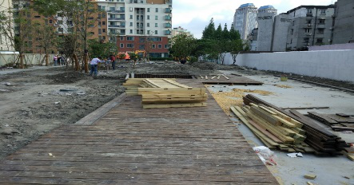
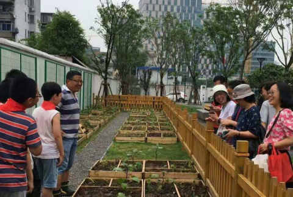

创智农园(Knowledge & Innovation Community Garden，简称 KICG)，位于上海市杨浦区五角场商圈的创智天地园区西侧，四周是住宅区和产业园区，是占地面积约为 2000平方米的街旁绿地。
2017年12月，城市360团队开始协助志愿团队的孵化。五角场街道办和瑞安房地产方将待改造实况放在“城市360”网页平台之后，和四叶草堂设计室、刘悦来工作室在平台上进行了对接沟通，达成了合作改造的共识。依照“城市360”畸零空间设计导则，成功将这处线性畸零空间改造为了一个能够给更多的周边居民和园区企业提供互动参与空间的开放场地。通过儿童教育与社区营造结合复合的功能性，搭建社区沟通的载体和场所，增强邻里的互动社交。
